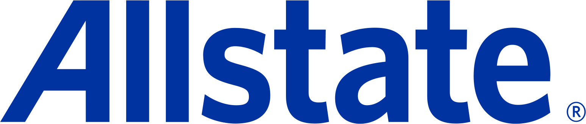

Allstate
Financial Data Analyst
Developer: Reporting & Automation · 360° Finance
Building enterprise AI agents, accelerators, and data platforms.
- Develop data transformations and reporting workflows using Python, PySpark, SQL, and Microsoft Fabric.
- Contribute to AI agent development and automation for internal business workflows.
- Translate business requirements into data solutions within an Agile development team.